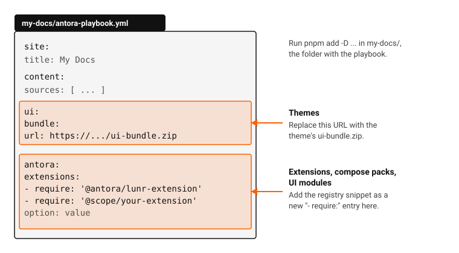

Installing from the registry
Every registry detail page ends with an Install snippet. This page explains where that snippet goes for each kind of package.
Where the playbook lives
Your playbook is antora-playbook.yml, usually at the root of your docs project, next to package.json.
Run every install command in that folder, and run antora from there too.

The registry places snippets in two spots:
-
Antora extensions, compose packs, UI modules and UI recipes go in the list under
antora.extensions. -
Themes replace the UI bundle URL under
ui.bundle.url.
Antora extensions
-
Install the package in the playbook folder:
pnpm add -D @antora-supplemental/related-docsFor packages marked "Not on npm yet", install from the repository instead:
pnpm add -D github:antora-supplemental/related-docs. -
Add the
requireline underantora.extensions, with any options the extension’s README lists indented below it:antora: extensions: - require: '@antora/lunr-extension' - require: '@antora-supplemental/related-docs' sites: none -
Leave
ui.bundle.urlas it is. Extensions run at build time on top of your current UI.
Some packages are Asciidoctor extensions, which go under asciidoc.extensions instead; their README says so.
See Registry filters for the difference.
Compose packs (bundles)
A compose pack, shown with a Bundle badge, loads a set of extensions for you.
-
Install the pack in the playbook folder, for example
pnpm add -D @antora-supplemental/facto-stack. -
Add its single
requireline underantora.extensions. -
Remove any
requirelines for extensions the pack already contains, listed under Bundle contents on its detail page. Registering them twice runs them twice.
UI modules and UI recipes
UI modules are installed by the ui-modules orchestrator, itself an Antora extension.
-
Check out or copy the module repository’s
ui-modulesfolder next to your playbook. -
Add the snippet under
antora.extensions. It points at the orchestrator and the registry file, and lists themodulesto apply, or arecipethat applies several modules at once:antora: extensions: - require: ./ui-modules/packages/orchestrator/lib/index.js registry: ./ui-modules/registry.json5 modules: - dark-mode -
Keep
ui.bundle.urlas it is. The orchestrator merges the modules into that bundle at build time.
Themes
A theme is a complete UI bundle, not an extension. There is nothing to install with pnpm.
-
Copy the theme’s bundle URL from its gallery entry or release page.
-
Replace the value of
ui.bundle.url:ui: bundle: url: https://github.com/antora-supplemental/antora-dark-mode/releases/download/v1.2.0/ui-bundle.zip snapshot: true
Only one bundle applies at a time. Theme add-ons such as dark mode for an existing theme are UI modules or extensions; install them as described above.
Check that it worked
-
Build the site from the playbook folder:
pnpm exec antora antora-playbook.yml -
Read the build log. Antora stops with
Cannot find modulewhen a package is not installed, and many extensions log one line when they load. -
Open the generated site (by default under
build/site) and look for the feature: a new link, page, search box or style. -
For a theme, view a page and check that the header and colors changed.
If nothing changed, check the indentation under antora.extensions: each entry starts with - require: at the same depth.